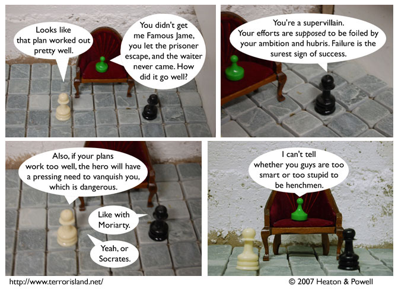

Strip #92
— Friday, January 12, 2007
Probably too stupid.
Notes, Thoughts, &c.
Ben’s Notes
Some of our readers may take issue with the portrayal of Socrates as a villain. That’s all well and good, but I put it to you, dear reader: is it not the case that Socrates was villainous in nature?
Reader: Surely he was, Ben.
And would you agree that one who is villainous is, by definition, a villain?
Reader: To doubt that would be madness.
Then does it not follow that Socrates was in fact a villain?
Reader: Now I see clearly; you have pointed out the error of my ways.
Lewis’s Notes
I was as surprised as anyone that it is logically necessary that Socrates is the paradigm case of a villain. That’s the beauty of doing a discovered comic. You learn a lot of things that you might have thought were empirical in the process of making it.